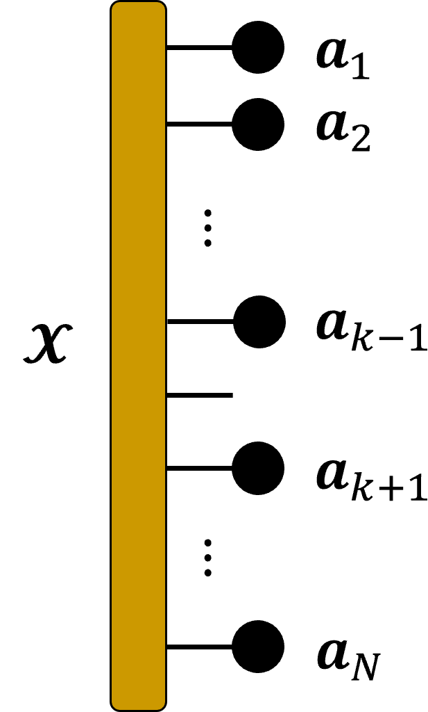
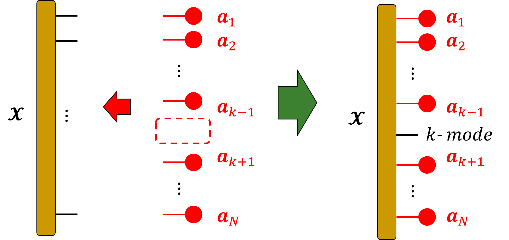
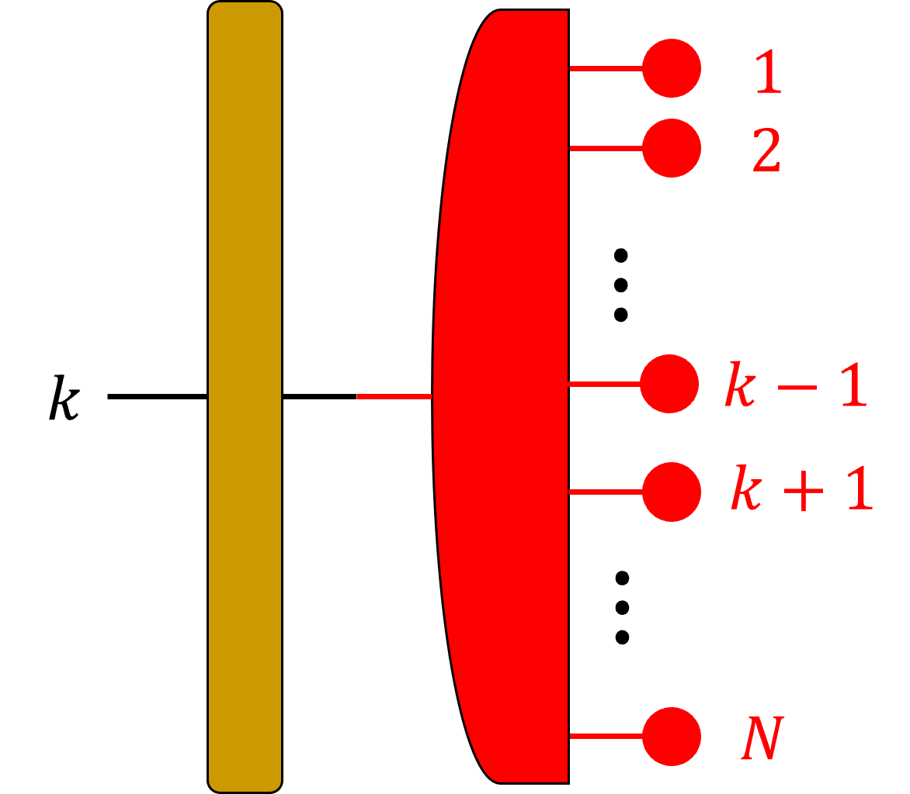

[1] "E:/home/ryoke/research-site"TVloo
TVlooはどんな関数か
テンソル\(\mathbf{\mathcal{X}}\)と，ベクトル\(\{\boldsymbol{a}_{1},\boldsymbol{a}_{2},\cdots,\boldsymbol{a}_{N}\}\)から１つのベクトル\(\boldsymbol{a}_{k}\)を除いた\(\left\{\begin{array}{ccc}\boldsymbol{a}_{1}&\cdots&\boldsymbol{a}_{k-1}&\boldsymbol{a}_{k+1}&\cdots&\boldsymbol{a}_{N}\end{array}\right\}\)との縮約をとる関数.

TVallから\(\boldsymbol{a}_{k}\)を排除した関数

- \(k\)-modeのみが残る
式で表すと，
\[ \boldsymbol{\mathrm{X}}_{(k)}(\boldsymbol{a}_{N}\otimes\cdots \otimes\boldsymbol{a}_{k-1}\otimes\boldsymbol{a}_{k+1}\otimes\cdots\otimes\boldsymbol{a}_{1} ) \]
- \(\boldsymbol{a}_{N}\otimes\cdots \otimes\boldsymbol{a}_{k-1}\otimes\boldsymbol{a}_{k+1}\otimes\cdots\otimes\boldsymbol{a}_{1} = vec(\boldsymbol{a}_{1}\circ \cdots\circ\boldsymbol{a}_{k-1}\circ\boldsymbol{a}_{k+1}\circ\cdots\circ\boldsymbol{a}_{N})\)

- 第\(k\)モード行列展開することで，第\(k\)モード以外のモードを第2モードにまとめることができる.
- ベクトルのクロネッカー積によって，まとめに1つのベクトルに.
- 2つの行列積をとると第\(k\)モードだけ残る.
Rコードを作成
関数なしVer
関数を使わずに，第\(k\)モードを除外して，テンソル\(\mathbf{\mathcal{X}}\)とベクトルの集合\(\{\boldsymbol{a}\}\)の積をとる
準備
\(3\)階テンソル\(\mathbf{\mathcal{G}}\in\mathbb{R}^{3\times4\times5}\)
## ## ##### サイズ(3,4,5)の3階テンソルを作成
## サイズを指定
shape <- c(3,4,5)
G <- array(sample(1:5
, 60
, replace = TRUE)
,shape)
X <- G ## コピー
print(X), , 1
[,1] [,2] [,3] [,4]
[1,] 5 2 3 1
[2,] 4 5 2 5
[3,] 2 4 1 2
, , 2
[,1] [,2] [,3] [,4]
[1,] 5 2 4 2
[2,] 1 4 1 3
[3,] 4 2 2 3
, , 3
[,1] [,2] [,3] [,4]
[1,] 2 4 2 2
[2,] 3 2 3 1
[3,] 1 3 4 3
, , 4
[,1] [,2] [,3] [,4]
[1,] 5 5 3 4
[2,] 2 4 5 1
[3,] 5 2 4 1
, , 5
[,1] [,2] [,3] [,4]
[1,] 4 3 1 4
[2,] 3 3 4 3
[3,] 4 1 2 1nRank <- length(shape)
print(nRank)[1] 3ベクトルの集合\(\{\boldsymbol{a}\}\)
## ## ##### ベクトルのリストを作成
## 領域確保
listA <- NULL
## nRank（Gの階数）分の要素を作成
for (n in c(1:nRank)) {
A_n <- matrix(sample(1:5
,dim(G)[n] ## 第1モードサイズ
, replace = TRUE
)
, ncol = 1) ## 第2モード(列)サイズは1
## listAのn番目の要素として，ベクトルA_nを格納
listA[[n]] <- A_n
}
print(listA)[[1]]
[,1]
[1,] 5
[2,] 4
[3,] 3
[[2]]
[,1]
[1,] 4
[2,] 2
[3,] 5
[4,] 3
[[3]]
[,1]
[1,] 5
[2,] 2
[3,] 5
[4,] 4
[5,] 3## liatAのサイズを格納するオブジェクト（縮退防止用？）
shapeA <- NULL ## 領域確保
## listAの各ベクトルのサイズをshapeAに保存
for(i in c(1:nRank)){
A_i <- listA[[i]]
shapeA <- c(shapeA
, nrow(A_i))
}## 同一性の確認
## 積をとる前のテンソルXのサイズと{A}の各ベクトルのサイズは一致
all.equal(shapeA
, dim(X))[1] TRUETVlooを計算（関数無し）
除外するモード：\(k\)
\(k = 2\)のとき
## k番目を除外してそれぞれ第nモード積をとる
k <- 2
for(n in c( 1:(k-1), (k+1):nRank )){
A_n <- t(listA[[n]])
X <- TMprod(Tensor = X
, Matrix = A_n
, modeID = n
)
print(dim(X))
}[1] 1 4 5
[1] 1 4 1## ## ##### 2025/04/24
X1 <- X ## 保存
print(X1), , 1
[,1] [,2] [,3] [,4]
[1,] 766 737 629 545print(dim(X1))[1] 1 4 1\(k=1\)のとき
## ## ####### k = 1 の場合
X <- G ## 戻す
k <- 1
for(n in c(2:nRank)){
A_n <- t(listA[[n]])
X <- TMprod(Tensor = X
, Matrix = A_n
, modeID = n
)
}
X2 <- X
print(dim(X2))[1] 3 1 1\(k=nRank(3)\)のとき
## ## ##### k = nRank の場合
X <- G
k <- nRank
for(n in c(1:(nRank-1))){
A_n <- t(listA[[n]])
X <- TMprod(Tensor = X
, Matrix = A_n
, modeID = n
)
}
X3 <- X
print(dim(X3))[1] 1 1 5
loopの範囲
loopの範囲を場合分けする必要がある
\(k = 1\)のとき
2:nRank
\(k = nRank\)のとき
1:(nRank-1)
それ以外
1:(k-1), (k+1):nRank
TVloo関数
コードの全体
# TVloo -------------------------------------------------------------------
TVloo <- function(Tensor
, listMatrix
, modeID ## k番目のベクトルを取り除く
, .isDebug = FALSE
){
shape <- dim(Tensor)
nRank <- length(shape)
shapeA <- NULL
for(i in c(1:nRank)){
A_i <- listMatrix[[i]]
## 転置している
shapeA <- c(shapeA, nrow(A_i))
}
## 逐次更新するテンソルとshapeを作成
Tensor_new <- Tensor
shape_new <- shapeA
## 2025/04/24，kによって場合分け
## loopにループ範囲を格納
if(k == 1){
loop <- c(2:nRank)
}else if(k == nRank){
loop <- c(1:(nRank-1))
}else{
loop <- c(1:(k-1), (k+1):nRank)
}
## k番目を取り除いてループ
for (n in loop ) {
## listA から行列を取得し，転置
A_n <- t(listMatrix[[n]])
Tensor_new <- TMprod(Tensor = Tensor_new
, Matrix = A_n
, modeID = n
, shape = shape_new
, .isDebug = .isDebug
)
## shapeを更新
shape_new <- dim( Tensor_new )
}
return(Tensor_new)
}
コードについてのメモ
引数
Tensor
listMatrix(2025/04/25 listAから変更)
modeID
積をとらないモード番号（\(k\)）
shape
shapeA <- NULL
for(i in c(1:nRank)){
A_i <- listA[[i]]
## 転置している
shapeA <- c(shapeA, nrow(A_i))
}shapeAには，Aの行数を格納
kの場合分け
loopに範囲を格納→forの引数
## 2025/04/24，kによって場合分け
## loopにループ範囲を格納
if(k == 1){
loop <- c(2:nRank)
}else if(k == nRank){
loop <- c(1:(nRank-1))
}else{
loop <- c(1:(k-1), (k+1):nRank)
}TVloo関数のテスト
\(k=2\)のとき
## TVloo関数を使って計算
X <- G ## 戻す
k <- 2
X4 <- TVloo(Tensor = X
, listMatrix = listA
, modeID = k
, .isDebug = TRUE)[1] 3 4 5
[1] 1
[1] 1 3
[1] 3 20
[1] 1 20
[1] 1 4 5
[1] 1
[1] 1 5
[1] 5 4
[1] 1 4print(dim(X4))[1] 1 4 1## 同一性の確認
all.equal(X1,X4)[1] TRUE\(k=1,nRank\)のとき
## ## ##### k = 1のとき
X <- G ## 戻す
k <- 1
X5 <- TVloo(Tensor = X
, listMatrix = listA
, modeID = k
, .isDebug = TRUE)[1] 3 4 5
[1] 1
[1] 1 4
[1] 4 15
[1] 1 15
[1] 3 1 5
[1] 1
[1] 1 5
[1] 5 3
[1] 1 3print(dim(X5))[1] 3 1 1## 同一性の確認
all.equal(X2,X5)[1] TRUE## ## ##### k = nRankのとき
X <- G ## 戻す
k <- nRank
X6 <- TVloo(Tensor = X
, listMatrix = listA
, modeID = k
, .isDebug = TRUE)[1] 3 4 5
[1] 1
[1] 1 3
[1] 3 20
[1] 1 20
[1] 1 4 5
[1] 1
[1] 1 4
[1] 4 5
[1] 1 5print(dim(X6))[1] 1 1 5## 同一性の確認
all.equal(X3,X6)[1] TRUE2025/04/24:全ての場合で正しく関数が動いたことを確認